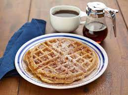

Applesauce Waffles


This belgian style waffle is nice and crsipy on the outside but the inside is fluffy and moist thanks to the apple sauce!
Waffles are a great breakfast choice and with this recipe you can even make it without eggs or milk. This is an easy to follow recipe and will only take about 15 minutes.
Ingredients
- 2 1/2 cups all-purpose flour
- 2 teaspoons baking powder
- 3/4 teaspoon baking soda
- 1/2 teaspoon kosher salt
- 1 1/2 cups evaporated milk
- 1/2 cup applesauce
- 1/3 cup brown sugar
- 3 tablespoons vegetable oil
- 1 teaspoon vanilla
- Powdered sugar, ground cinnamon and maple syrup, for serving
Steps
- Preheat the waffle iron. Preheat the oven to 200 degrees F if you plan on holding the cooked waffles in the oven. Whisk the flour, baking powder, baking soda and salt together in a medium bowl.
- Whisk the evaporated milk, applesauce, brown sugar, oil, vanilla and 3/4 cup water in a large bowl.
- Fold the dry ingredients into the wet, and stir until combined. (Don't mix too much-some lumps are OK-just make sure the flour is coated.) Allow the batter to rest at room temperature for 5 minutes before baking.
- Ladle enough batter into the waffle iron to fill it to the edges, and cook until crispy and brown, 6 to 7 minutes. (You can tell the waffles are ready when very little steam comes out of the waffle iron.) Continue in batches until all the batter is used. Keep the cooked waffles warm in the oven or covered with foil on a plate while you make the remaining waffles. Sprinkle with powdered sugar and cinnamon, and serve with maple syrup.